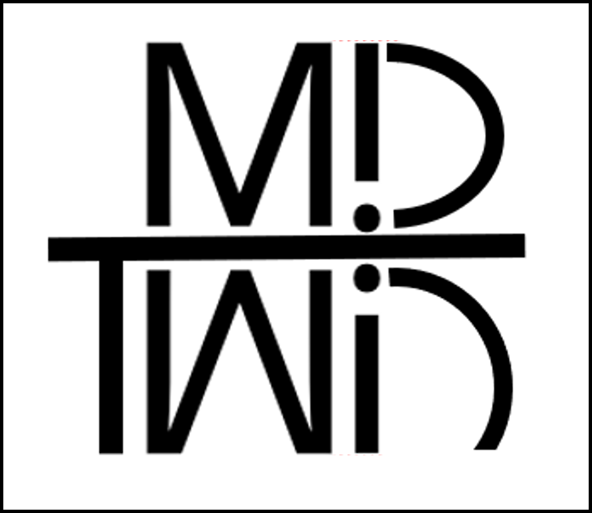

Project mark

The problem
Healthcare and life-sciences research often needs physician perspectives, but collecting and repeatedly querying those perspectives is expensive and slow. Erria explores whether a physician's decision patterns can be represented as a structured, calibrated AI persona rather than a generic prompt.
System design
The prototype separates doctor and client workflows. Doctors move through structured onboarding and calibration; clients create market-research surveys and review results. The public-facing prototype also includes account access and product information.
Doctor pathway
Structured onboarding captures specialty/practice information and behavioral preferences. AI-generated clinical vignettes elicit richer responses. A calibration stage presents AI responses back to the physician for feedback, creating another layer of evidence for persona construction.
Client pathway
Clients can create market-research surveys, access previous results, and move toward visualization/reporting workflows. The design is intended to match research questions with relevant physician personas.
Why this project matters
Erria combines several areas I want to keep working in: applied generative AI, structured data collection, healthcare research, relational data modeling, and user-centered workflow design. The difficult part is not generating text; it is designing the evidence and calibration loop around the model.